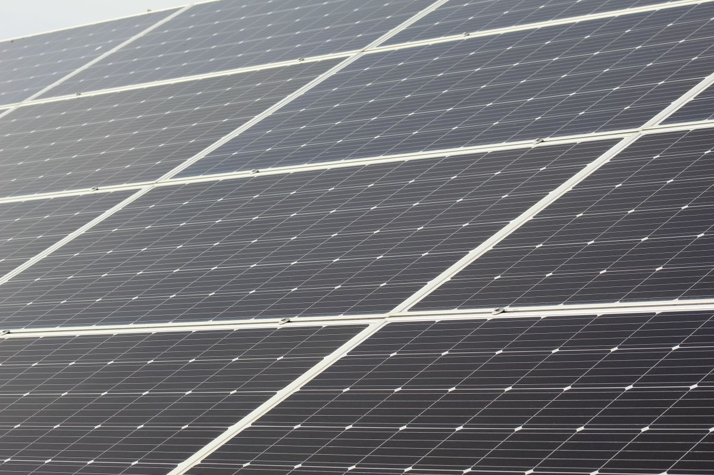

Solar Panel
Control
Heatwaves can increase household electricity use, especially for cooling, while high panel temperatures can reduce solar output. Use this page to understand those changes and prepare for heatwaves and power interruptions.
Check your solar systemHow Heat Affects
Solar Panels
Sunlight gives a panel energy to make electricity and warms its cells. During a heatwave, hot cells may generate less just as household cooling needs rise.

Strong sunlight can provide more energy for a panel to generate electricity. As the panel absorbs sunlight, its cells heat up. On a hot day, strong sun may help generation while high cell temperatures reduce the panel's voltage and efficiency. A very hot day therefore does not automatically mean more electricity.
Sunlight intensity and panel temperature are different things. A panel's temperature depends on how much sun it receives, wind around it and how it is mounted. A panel in direct sun can be hotter than the surrounding air. The U.S. Department of Energy explains how sunlight, temperature and other conditions affect photovoltaic performance.
Clouds, shade from nearby objects, dust and the condition of the inverter and other equipment can also change the electricity produced. For useful comparisons, note the conditions as well as the reading.
Heat can temporarily lower output while a panel is operating. When the panel cools, that temperature effect can ease. Equipment degradation is a longer-term decline as panels or other parts age or become damaged. Persistent changes deserve a closer check, but readings alone cannot identify the cause.
U.S. Department of Energy / performance and longevityCompare solar output on hot days
During a heatwave, household electricity use for cooling can rise while high panel temperatures can lower solar output. Compare your system's generation on a typical sunny day and a hot, sunny day. Readings are usually available on an inverter display or in a solar monitoring app.
Cloud cover, shading, dust and equipment condition can also affect generation. Compare days with similar sunlight and similar system conditions. The result is an observed difference in generation. It cannot show whether heat caused the change or whether generation met your household's electricity needs.
Solar System Check
Before hot weather raises household electricity use for cooling, record what you know about your solar setup. This checklist is generated from your answers.
A checklist for your system
These suggestions follow the details you selected. Change your answers above and build the checklist again if your information changes.
Solar Maintenance Task List
Use this list to check conditions that can affect panel output, especially during hot weather when household electricity use for cooling may rise. Stay on the ground when looking at roof-mounted panels. Do not open electrical equipment or handle exposed wires.
For cleaning, repairs or electrical work, follow the equipment maker's instructions and use a qualified solar technician. See the Australian Government's solar maintenance guidance and the Queensland Electrical Safety Office's solar safety advice.
Heatwave and Backup Power Planner
Heatwaves can raise household electricity use for cooling while high panel temperatures can lower solar output. Estimate appliance use and compare it with your battery's usable capacity, if your household has one.
Estimate appliance use in hot weather
Add appliances your household may rely on during hot weather, especially cooling devices. Enter each appliance's rated power from its label or manual and estimated hours of use in one day. The tool does not assume a system size or battery.
This comparison helps estimate whether your available battery capacity can meet your selected appliances’ energy needs. It does not guarantee how long your backup system will run
Plan for a heatwave or power interruption
Before prolonged hot weather
During a power interruption
After the event
Plan with your local conditions in mind
Consult the Risk Map to explore heat information across Myanmar before preparing for a heatwave. Cooling needs can rise while high panel temperatures lower solar output. Use local context alongside your own system readings and equipment instructions when planning.